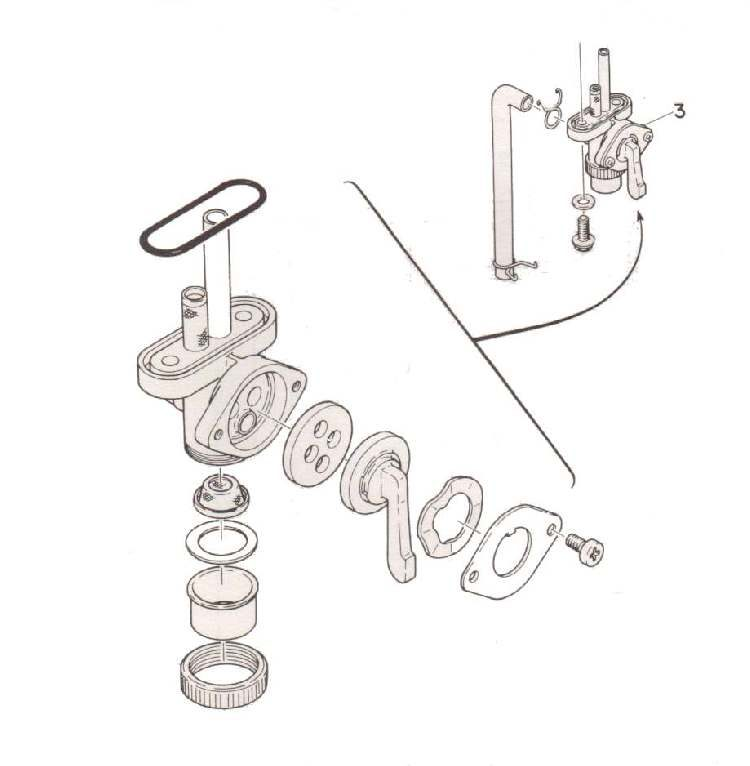
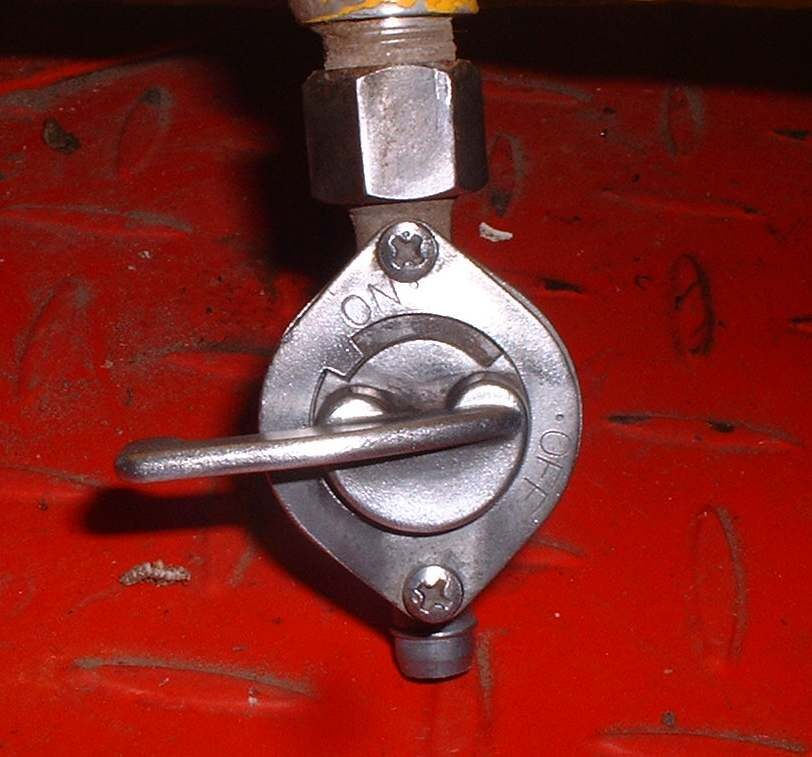

Home mechanic (basic tools) · Time: 20 to 45 min (estimate) (estimate)
This job proves whether fuel can flow from the tank to the carburettor, and finds leaks, kinks and blockages in the tap and hoses. On a carburettor bike it is the first fuel check after "is there fuel in the tank". On a fuel-injected bike you only inspect the hoses from outside; the line is under pressure and is not opened at home.
Safety
- Work outdoors or in a well-ventilated place, away from flames, cigarettes and sparks. Keep a fire extinguisher (ABC dry powder) near you.
- Let the engine and exhaust cool first. Fuel dripping onto a hot exhaust can catch fire.
- Wear safety glasses. Catch all fuel in a clean container and wipe spills at once.
- Fuel-injected bikes: do not pull a fuel hose off. Residual pressure can spray fuel. Leave pressure work to a workshop.
You need
- A clean, clear glass jar (to see water or dirt) and a proper fuel can.
- Hose clips, a new hose of the same inside size and fuel-rated material, or a tap O-ring if you find damage.
Steps
- Identify your tap. A manual tap has OFF, ON and RES (reserve). A vacuum tap has a small vacuum hose to the engine and ON, RES and often PRI (prime). Most fuel-injected bikes have no tap; the pump is in the tank.
- Look along every fuel hose with a torch. Replace any hose that is cracked, hard, swollen, sticky or kinked (K-Light 125 manual: wear, cracks or swelling mean replace).
- Check every clip is tight and every joint is dry. A wet joint or a fuel smell means a leak.
- Carburettor bikes, flow test: turn the tap OFF. Pull the hose off the carburettor end and put it into the jar.
- Turn the tap to ON. Fuel should run in a steady stream. Then try RES; it should also flow. Turn the tap OFF again.
- Vacuum tap: fuel only flows on ON when the engine sucks. Use PRI for the test if it has one. If it has no PRI, a workshop can apply gentle vacuum to the small hose. No flow on PRI means a blocked tap or filter.
- Look at the fuel in the jar. Bubbles or a separate clear layer at the bottom mean water. Brown or cloudy fuel or a varnish smell means old fuel. Go to Drain old or contaminated fuel.
- Weak flow on both ON and RES: remove the fuel cap and test again. If flow improves, the tank vent is blocked: see Check the fuel tank vent.
- Still weak: the tap strainer or inline filter is blocked. Drain the tank, remove the tap, and clean its strainer and sediment bowl by blowing air from the inside out. Fit a new O-ring or gasket if the old one is flat. See also Replace the fuel filter.
- Refit the hose and clip. Turn the tap ON and check every joint for drips before starting.
Check your work
- Strong flow on ON and RES, no drips at the tap, hose ends or carburettor.
- No fuel smell after five minutes with the tap ON.
- The engine starts and runs without stopping after a few kilometres.
If it did not fix the problem
- Good flow to the carburettor but the engine still starves: see No fuel reaching the carburettor and Clean the carburettor.
- Fuel-injected bike with no pump buzz: see Check the fuel pump.
- Leak from the tank seam or tap body that clamps will not fix: replace the part or take it to a workshop.